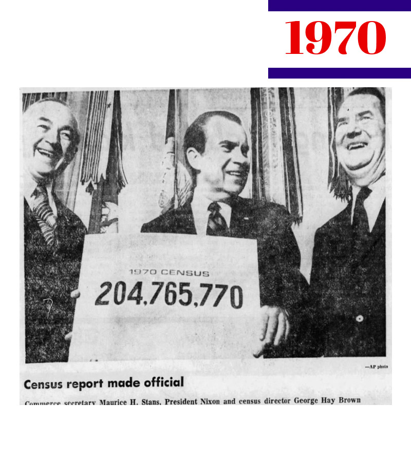
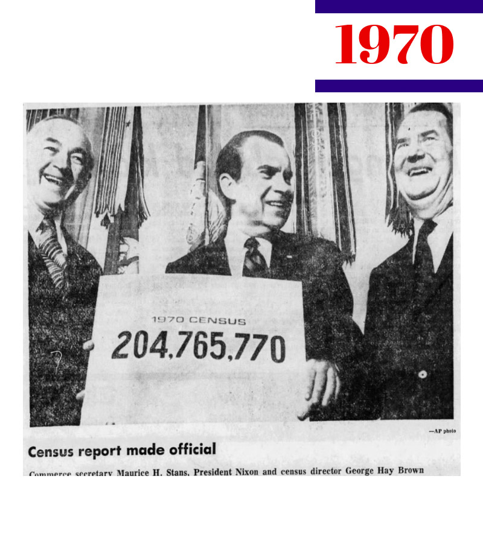

Once the 2020 census has been completed, the Census Bureau and the Department of Commerce will be expected to ANNOUNCE the total populations of each state and the number of representatives each state is due in the next House of Representatives. The President will then TRANSMIT that packet of figures to Congress. This website explains the historical precedents governing this tradition of ANNOUNCE and TRANSMIT.
These are the central pillars of the “announce and transmit” tradition:
Every 10 years, the U.S. Census Bureau counts each person in the United States, fulfilling a duty inscribed by the founders in the Constitution of the United States. For nearly a century now, the Census Bureau and the Department of Commerce have followed the count by publicly ANNOUNCING the total numbers of persons in each state and the number of representatives each state will have in the next decade's House of Representatives.

 

The Census Bureau and Department of Commerce also TRANSMIT that packet of numbers through the President to Congress according to deadlines fixed in law by Congress.


Commerce Secretary Locke transmitted the apportionment numbers to President Obama. At 11am, Secretary Locke, Deputy Secretary Blank, and Census Bureau Director Groves released the first set of 2010 Census numbers — the resident population and Congressional apportionment totals for each state — during a news briefing at the National Press Club.
President Obama (D) transmitted the apportionment numbers to Congress.
The Clerk of the U.S. House of Representatives sent a certificate to the governor of each state, indicating the number of representatives apportioned in the next Congress.


Commerce Secretary Mineta, Under Secretary Shapiro, and Census Bureau Director Prewitt transmitted the apportionment counts to President Clinton, and then released the first set of 2000 Census numbers — the resident population and Congressional apportionment totals for each state — during an 11 a.m. news briefing at the National Press Club.
President Clinton (D) transmitted the apportionment numbers to Congress.
The Clerk of the U.S. House of Representatives sent a certificate to the governor of each state, indicating the number of representatives apportioned in the next Congress.


Commerce Secretary Mosbacher transmitted the apportionment numbers to President Bush, and then Under Secretary Darby and Director Bryant announced the apportionment numbers during a press briefing held at the Department of Commerce.
President Bush (R) transmitted the apportionment numbers to Congress. The transmission letter included a caveat stating, “The population counts set forth herein are subject to possible correction for undercount or overcount. The Department of Commerce is considering whether to correct these counts and will publish corrected counts, if any, not later than July 15, 1991
The Clerk of the U.S. House of Representatives sent a certificate to the governor of each state, indicating the number of representatives apportioned in the next Congress.


The Census Bureau officially certified the 1980 population count of the states and reported the apportionment numbers to President Carter only hours before the legal deadline. The Census Bureau then held a ceremony at the Department of Commerce and released the final national population count as well as state-by-state population counts.
President Carter (D) transmitted the apportionment numbers to Congress.
The Clerk of the U.S. House of Representatives sent a certificate to the governor of each s

Commerce Secretary Stans transmitted the apportionment numbers to President Nixon, and a formal ceremony took place at the White House in which Secretary Stans and Director Brown presented the results of the 1970 census to President Nixon.
President Nixon (R) transmitted the apportionment numbers to Congress.
The Clerk of the U.S. House of Representatives sent a certificate to the governor of each state, indicating the number of representatives apportioned in the next Congress.

Commerce Secretary Mueller transmitted the apportionment numbers to President Eisenhower, and the Commerce Department released a press statement at noon announcing the official results of the 1960 census and apportionment numbers for each state.
President Eisenhower (R) transmitted the apportionment numbers to Congress.
The Clerk of the U.S. House of Representatives sent a certificate to the governor of each state, indicating the number of representatives apportioned in the next Congress.


Secretary Sawyer, along with Director Peel and Deputy Director Eckler, delivered the apportionment numbers to President Truman at 11:30 a.m. and the Department of Commerce announced the apportionment numbers.
President Truman (D) transmitted the apportionment numbers to Congress.
The Clerk of the U.S. House of Representatives sent a certificate to the governor of each state, indicating the number of representatives apportioned in the next Congress.


Two days after Commerce Secretary Jones transmitted the apportionment numbers to President Roosevelt, the Commerce Department released the final 1940 census figures.
President Roosevelt (D) transmitted the apportionment numbers to Congress. Two sets of numbers were transmitted. One used the method known as the method of major fractions, which was the method used in the last preceding apportionment, and the other used the method of equal proportions.
The Clerk of the U.S. House of Representatives sent a certificate to the governor of each state, indicating the number of representatives apportioned in the next Congress.


One day after receiving the apportionment numbers from Commerce Secretary Lamont, President Hoover announced the reapportionment figures during a news conference, stating that "The Census [Bureau] has furnished me with the conclusions on the subject, and I will give them to you. I will not attempt to read the results."
President Hoover (R) transmitted the apportionment numbers to Congress. The transmission included the apportionment numbers as calculated by both the method of major fractions, which was the method used in the last preceding apportionment, and by the method of equal proportions.
The Clerk of the U.S. House of Representatives sent a certificate to each state, indicating the number of representatives apportioned in the next Congress. The Reapportionment Act of 1929 says "It shall be the duty of the Clerk of the last House State executives by the of Representatives forthwith to send to the executive of each State a certificate of the number of Representatives to which such State is entitled under this section." However, there was no set time frame given for this transmission until Public Law 76-481 in 1940.